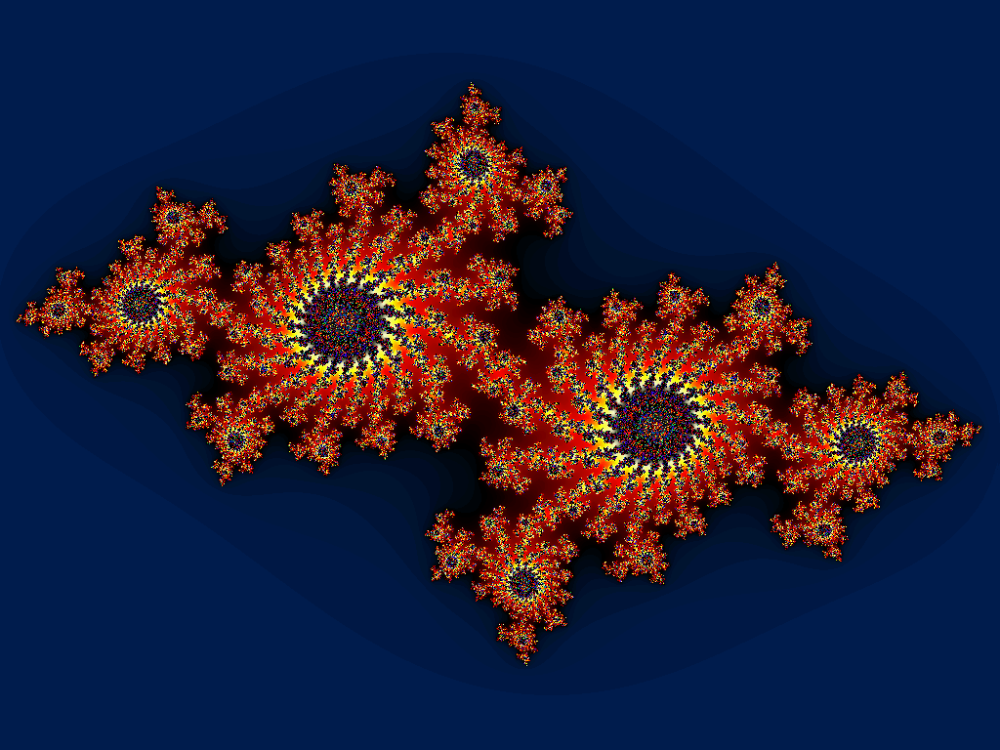

<div style="display: flex; flex-direction: column; height: 100%">
<h3>Fractals</h3>
<h5>in 2D</h5>

<p>
  A few examples of "famous" 2D fractals.
</p>

<div style="display: flex; min-height: 1px; flex: auto;">
  <div style="display: flex; flex-direction: column; justify-content: center;">
    
    <small class="r-fit-text">Mandelbrot set fractal</small>
  </div>
  <div style="display: flex; flex-direction: column; justify-content: center;">
    
    <small class="r-fit-text">Julia set fractal</small>
  </div>
  <div style="display: flex; flex-direction: column; justify-content: center;">
    
    <small class="r-fit-text">Sierpiński carpet</small>
  </div>
</div>

</div>